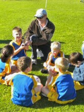
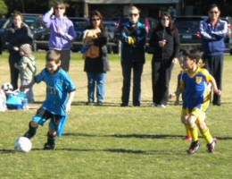
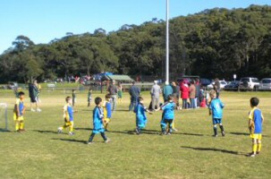
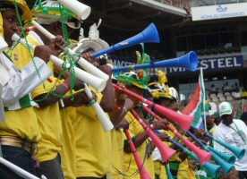
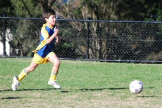
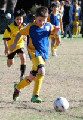
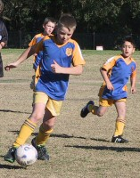

| Match Report - 12 June 2010 |
|
|
|
|
|
|
|
|
|
|
Following rain soaked week the sun was shining brightly for the resumption of play
for the U6's soccer competition.
After a slow start both teams moved into top gear and began to move the ball around
the field with skill and enthusiasm. Inspired by the start of the 2010 World Cup,
the Green B's began attacking the goal of the opposition with a few early shots
and near misses. In the 10th minute North Ryde took the lead when Luka broke
through the defense to score the opening goal of the match. Post goal celebrations
were a treat to watch!

Ryan used raw speed and side stepping to confuse the opposition long enough to
allow Luke to use his blinding speed and footwork to break down the line and score
a second goal. Luka continued his fierce attack on the opposition scoring a further
two goals.
With their backs to the wall, the Gladesville Ravens went on the attack but were
unable to penetrate the defense of Jasmine, Jayden and Lachlan who combined skill
and wit to keep the Ravens form scoring for the entire match.

In the dying minutes of the match, Brandon strategically positioned himself near
the goal ready to strike. With one near miss already Brandon was determined to make
this one count, which he did scoring the final goal of the match sealing the
victory 5-0.
Given the strategic prowess and determination of Brandon, he received the player
of the week award!
Those late nights watching the World Cup have really paid off!
WELL DONE TEAM!
- John Lee
|
|
|
|
|
|
After a 3 week absence from the field, the White A's were ready for action! Ryde
Saints could only watch in quiet admiration as a blur of yellow and blue players
enveloped them like a thick punishing mist.
From the first kick Ashie showed signs of World Cup fever as he dribbled the ball
up the field and scored the first goal. Max and Toby tag teamed a series of goals
and Ol worked the mindgame angle by regularly shouting out the rapidly increasing
score. At one stage Ben and Ryan strategically pretended to daydream at the other
end of the field and just when the Saints thought they were on a winning run,
there they both were, crushing the illusion with their lightening reflexes.
Another great game for the victorious White As and good one Toby for Player of
the Week. Final score 8-0.
- Paul Watson
|
|
|
|
|
|

Finally, a sunny Saturday morning and the White B's were bursting with energy after
being denied gameplay for 2 weeks. Having obviously taken inspiration from the
teams in the World Cup (the non-Socceroo ones anyway), each player seemed to bring
out their best for this match.
Goal scoring machine Christian notched up a hat-trick before half time, and then
followed it up with another goal in the second half. Blake & Alexis both scored
their first goals for the season, and Riley managed to add 2 more to his tally.
Idan & Joshua came close to scoring goals too, but it was more the determination
and fight to get to the ball by each of the six teammates which impressed the
most.
The Player of the Week award would have not been out of place in any of their
hands this week, but at the same time it was thoroughly deserved by Christian
for his efforts. A great win for the team this week - the future is looking very
rosy for these kids who only a couple of months ago had never played a competitive
soccer match. Well Done!
- Will
|
|
|
| U7 Red B |
|
North Ryde 18 - All Saints Hunters Hill B 1
|
|
|
|
Fletcher and Vivek played really well. We all played really well and we did good at
scoring goals.
My best memory was the end of the game when I remembered it was 18-1.
- Martin Sellar
|
|
|
|
|
|

It was a glorious sunny day at Magdala and the thrill to return to the field
after 2 weeks of wet weather was obvious throughout the team players, parents,
grandparents and friends.

The game was evenly matched and although the team were tired early they played
hard and were unlucky not to score. John continued in his fine form coaching and
umpiring this game - Thanks!
The game was mostly defensive and our sweepers Cameron (1st half) and Rishi (2nd)
worked hard to keep the ball out of our defending goal. The game involved a lot
of kicking between the teams and not a lot of running and dribbling the ball,
which we will focus on at training this week.
Special mention goes to Kevin who made a few field length runs and was very close
to scoring. Luca continues to be consistently solid in the midfield and side free
kicks - Well done Luca when you are still recovering from your cold. Liam also had
a few spectacular ball skill moments and almost broke through the panthers defense.
Emily and Oliver also strong in the midfield supporting there team mates and
finding open space as practiced at training.
The player of the match this week was Rishi Sidhu - another great display of all
round strength, skill and endurance - well done Rishi
- Sarah Robson
|
|
|
| U8 Red B |
|
North Ryde 5 - Eastwood St Andrews 0
|
|
|
|
Thankfully we finally had great weather on our side... one wonders what us parents
would do if we were to endure another wash out weekend. Not sure if it was us
parents going mad busting to see the boys have a game or was it the poor kids
busting for a game.
All the boys played exceptionally well together, excellent team work, brilliant
positioning... mmmm yes I think they must have been watching the FIFA games and
checking out the big boy tactics... oh and those ball- and foot-skills, Wow!
All the boys worked together, the team bond and team spirit lead to fabulous goals
being scored by Luke A & M, Aiden and Jarrod. Nathaniel, Blake and Jay got really
close on numerous occasions.
It was such a great game to watch, couldn't think of a better place to be, than
watching the Under 8's Red B's.
The final score was 5 - 0 with a win to us.
Player of the match went to Luke M, despite feeling unwell there was no way he was
going to miss this one... so well deserved.
- Caterina (Luke M's Mum)
|
|
|
|
|
|
The match against Epping Eastwood was a tale of two distinct halves for the U10
Div 1 team this morning, not unlike their previous encounter against the same side
a few weeks ago that saw North Ryde romp home with six unanswered goals in the
second half.
This time it was the other way around. North Ryde came out firing in the first
half, stringing together one terrific movement after the next that had the forwards
scampering around in delight at the prospect of finishing them off. It was only a
matter of time before they began to reap the fruits of their labour and bury the
ball in the back of the net, which they did on three occasions before the half-time
whistle blew. Adam picked up a well-timed pass that was served up behind the line
of defense and side-stepped the keeper cool as you like to give North Ryde an early

lead. Our defense was in fine form again and shutting down any attacking play with
excellent one-on-one wins that we had become accustomed to this season. It wasn't
long before the ball was taken down a similar road that led to the first goal, and
Shannon was the final link in the chain to give North Ryde their second goal.
Charlie made no mistakes with a free kick just outside the box, striking the ball
well and watching as it sailed effortlessly under the top bar to give North Ryde
a 3 - 0 lead going into the break.
The second half, however, was a slightly different story. The urgency that had
given our team their dominance in the first half seemed to evaporate in the second,
and they played most of the rest of the game on the back foot. Epping Eastwood,
on the other hand, perhaps sensing the change in the mood of the contest were
suddenly in rampant form and led one charge after another down the right wing
that invariably culminated in a series of good cross-kicks into our goalmouth that
had us scrambling in desperate defense. They scored two goals in quick succession
towards the middle of the half that brought the game back into focus, and it was
a white-knuckle ride for both players and spectators for the remaining ten minutes
of the match.
This might have been a good time to haul out the ubiquitous vuvuzela to motivate
our team for the final push and spur them on to victory, but the old adage of
'A pipe gives a wise man time to think, and a fool something
to stick in his mouth' was a bit too close for comfort. The U10 Div 1's kept
their heads together though, vuvuzela or not, and managed to keep their motivated
adversaries at bay until the dying second of the match and hold out for a 3 - 2
victory against a worthy opponent. Well done North Ryde.
- Mark Howard
|
|
|
|
|
|

From the kick off it was all North Ryde, pressure pressure pressure!
Our backs worked hard to ensure that North Ryde won the territorial encounter with
most of the game played in the Epping Eastwood's half.
North Ryde went into half time will a narrow 1-0 lead, during the break the team
received some inspirational and motivating words from our coach. We started the
second half in the same fashion as the first half.


Great work from our backs, playing a dominant game in defense providing ample
opportunities for our forwards.
North Ryde had heaps of shots at goal, with 3 rebounds off the posts and 4 balls
in the net. There was plenty of excitement.
We produced some great goals, with our boys combining well in numerous offensive
barrages.
The whole team contributed to victory!
This match reporter thought the goalie, backs and midfielders played the best today,
and made sure we left the Epping Eastwood Tigers toothless!!
The score at the final whistle was 4 to 0.
Well Done Boys!
- Tony Saba
|
|
|
|
|
|
Roselea 5 defeated North Ryde 0
The above score does not reflect the truly courageous effort by 11 boys committed
to their team. With our coach away on World Cup duty and several players absent
fulfilling other commitments the team was left with eleven players on the day to
take on a side which had beaten us 9 - 1 on the occasion of our previous meeting.
A new team structure of 4-4-2 with William G and James H playing up front
continually worried our opposition and created several possible scoring
opportunities. However once again the bounce of the ball went against us and at
half time the score was 2 - 0 despite some outstanding goal keeping efforts by
Sam B.
The second half was a hard fought affair and it was only toward the final stages
of the game that tiredness set in and our rivals with the benefit of 4 fresh
reserves scored a further 3 goals. Every player last Saturday can hold their
heads high and be proud of their efforts, a sentiment that was echoed by the
opposition coach after the game who praised the boys' efforts and felt that a
win for us is just around the corner.
Well done boys!
Thanks to David Burn for helping with the running of the team on the day. We will
get a win soon!
- Bill Greer (Manager)
|
|
|
|
|
|
The mighty men of North Ryde assembled ranks in the warm sunshine of Tuckwell park
this Sunday. Due to the inclement weather of the previous weeks our heroes hadn't
been allowed to show their skills to their ever growing legion of fans who were
gathered in large numbers eager to witness another game of sublime skill.
This game holds a special significance to North Rydes finest as their opponents
today were none other than St Ignatius... Unbelievably, our heroes, the highest
ranked team throughout the entire proud club of North Ryde, suffer the indignation
week after week of being forced from their normal training times at North Ryde Oval
by a rival club. St Ignatius wisely decided not to tear up their own fields for
training, and now train at North Ryde Oval, overloading an already capacity-filled
field that was only re-turfed a season ago, which now is a field in poor condition
due to the over-use it receives. To allow rival clubs to disrupt our teams on our
home park whilst adding another 50 men to damage our only training and playing
surface is embarrassing in its lack of foresight and intelligence. Some competitive
banter between the teams in the last few weeks had led to a straight-forward bet...
Winner of this game gets the field... North Ryde's finest gladly accepted the
challenge, confident that they wouldn't let down their fellow North Ryde teams,
unlike some council bureaucrat.

St Ignatius won the toss and took a quick kick off which drew them a corner against
our heroes. The ball sailed over from the right hand corner, swirling and floating
not unlike a Jabulani at altitude until it ricocheted off the outstretched hands of
Boofa and bobbled into the goal. North Ryde's finest re-grouped after this horror
start and began to slice through the young men of St Ignatius with quality passing
and blistering runs from the mid-field, in turn allowing the forwards to hammer into
the woodwork like a three-armed carpenter until the pressure yielded a corner for
our heroes. The ball shimmered through the air, sailing in an un-troubled arc, until
Brother Mick soars above the pack, trampling the souls of the damned underfoot to
glance the ball off his halo onto the flying Chaddy who slotted it past the
despondent keeper to bring the scores level 8 minutes into the game.
North Ryde's finest now had the upper hand in all facets of the game, attacking at
will, toying with the young opposition, as a leopard toys with a baby baboon before
it crushes its skull in it's powerful jaws... then Sticksy was away and to set
Chaddy up with just the keeper to beat... 2 - 1 North Ryde.
You could smell the fear emanating from the young men of St Ignatius, and once the
panic set in, it tore through the team like a mid-summer grass fire, and all the
while the rock solid defense from our heroes only poured more fuel onto the flames.
Divine intervention is the only way to describe the next passage of play, as Brother
Mick calls super sub Micky T from the sideline. Micky calmly jogs on to the park,
ambles up to the goal mouth and with his first touch for the game slams the ball
into the back of the net from his forehead that must have been still damp from the
holy water sprinkled upon thee... 3 - 1.
St Ignatius had no answer for this onslaught, and were disheartened further by the
exodus of their fans who left the ground in droves after a screamer from the hard
working midfielder M & M rubbed salt into the gaping wound that this game had become.
North Rydes finest chewed on their oranges with a 4-1 lead.
St Ignatius took to the field for the second half with an armada of fresh troops,
obviously in a desperate attempt to wear the older statesmen of North Ryde's finest
down with their young fluid legs. The tactic brought results, with a clumsy tackle
drawing a feminine dive inside our heroes box, causing the man in black to point to
the spot... 4 - 2.
North Ryde's finest again pushed the attack, this game has been played at a breakneck
pace since the starting whistle, and if anything seemed to be quickening as the game
drew on. It see-sawed between counter attacks from both teams with our heroes adding
more splinters to the ball, very unlucky not to extend their lead.
A break from St Ignatius saw a clearance from the backs ricochet off the steel chest
of a blue and gold warrior, to land fortuitously at the feet of lazy striker who
seemed to accidently toe punt the ball into the goal to give St Ignatius a sniff
with 15 to go. As the referee took his position for the restart, a noticeable tremor
rumbled through North Ryde's finest, to a man and as one they all stood a little
straighter, their muscular chests strained against their Guernsey's, their broad
shoulders pinned back as their chins pointed defiantly at the opposition. There was
no way on earth that these proud men were going to lose this game. St Ignatius had
used up all there good fortune and the scoreline for them was very flattering
indeed. The last 10 minutes were not for the faint hearted as the pace again
intensified, but the steely resolve in North Ryde's finest was overpowering, led by
example from body-on-the-line defense from Rattle that jarred the bones of the
St Ignatius forwards and severely dented their will to push forward into the teeth
of the beast.
Three lingering blasts from the man in black's whistle terminated the game at 4 - 3.
Our heroes had won the game, and more importantly won the rights to their spiritual
home... North Ryde Oval. After a few jokes informing St Ignatius that we hope that
they enjoy road running, Brother Mick extends a warm hand from inside his cloak to
the vanquished foe... We will now allow them to train at North Ryde Oval, on our
terms, only after North Ryde's finest have finished with their session and are
enjoying a well deserved beverage.

- LJ Woodford
|